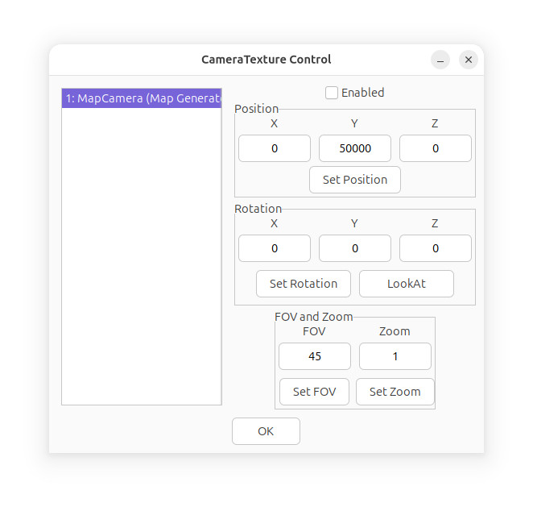

CameraTexture Control
The CameraTexture Control dialog shows
all of the created Camera Textures in the current simulator
instance.

The most important option in this window is the Enabled
checkbox; when a Camera Texture is enabled, it uses up rendering
time, and might cause FPS slowdowns.
Position and Rotation set the position and rotation
of the Camera Texture's camera, primarily used to create security
cameras.
In the example image, the MapCamera is shown, which is an
internal Camera Texture that generates a map of the simulator
environment.
To use the Map Camera in your own buildings, first enable the map
using the Map command in the script, and then use the "MapCamera"
texture on an object such as a wall.